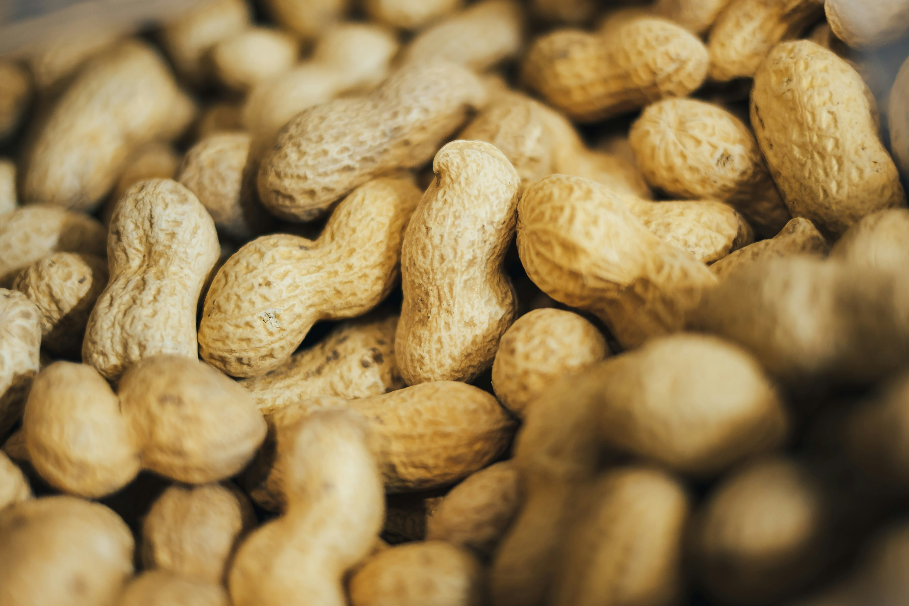
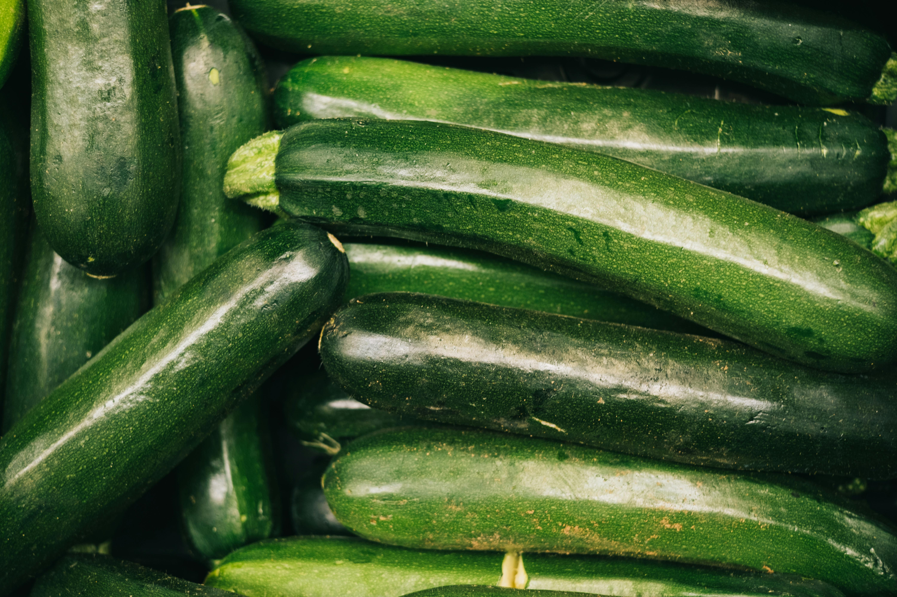
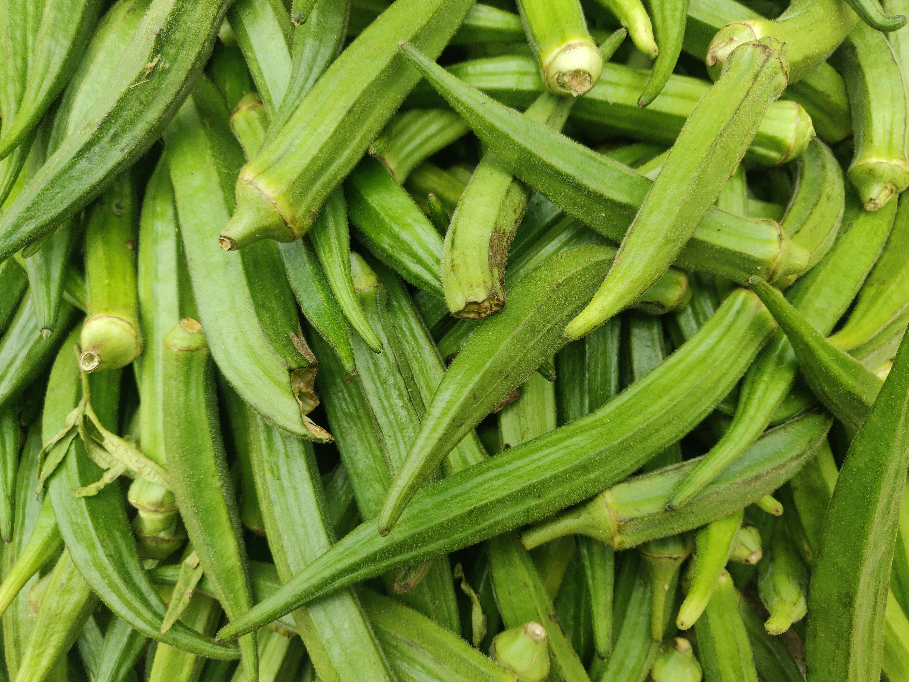
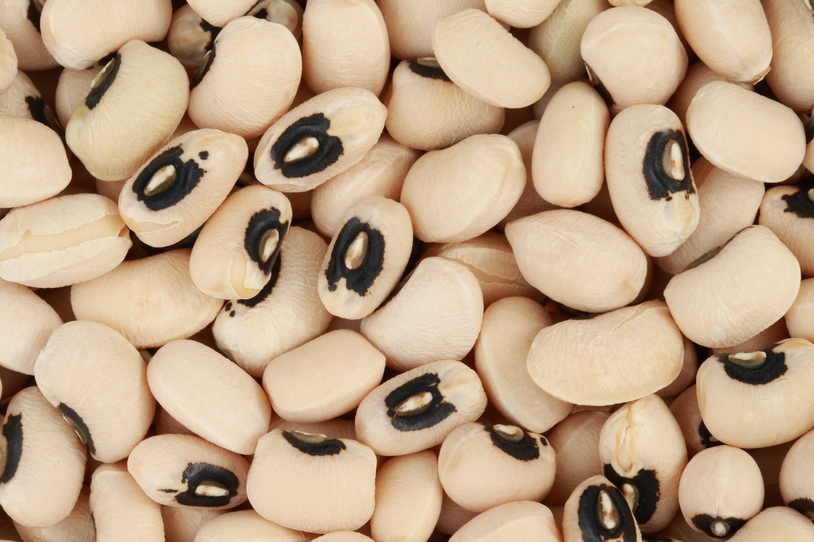
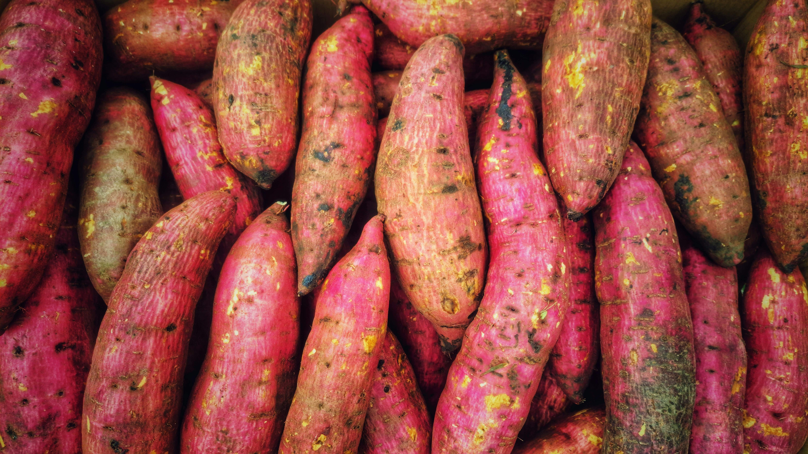
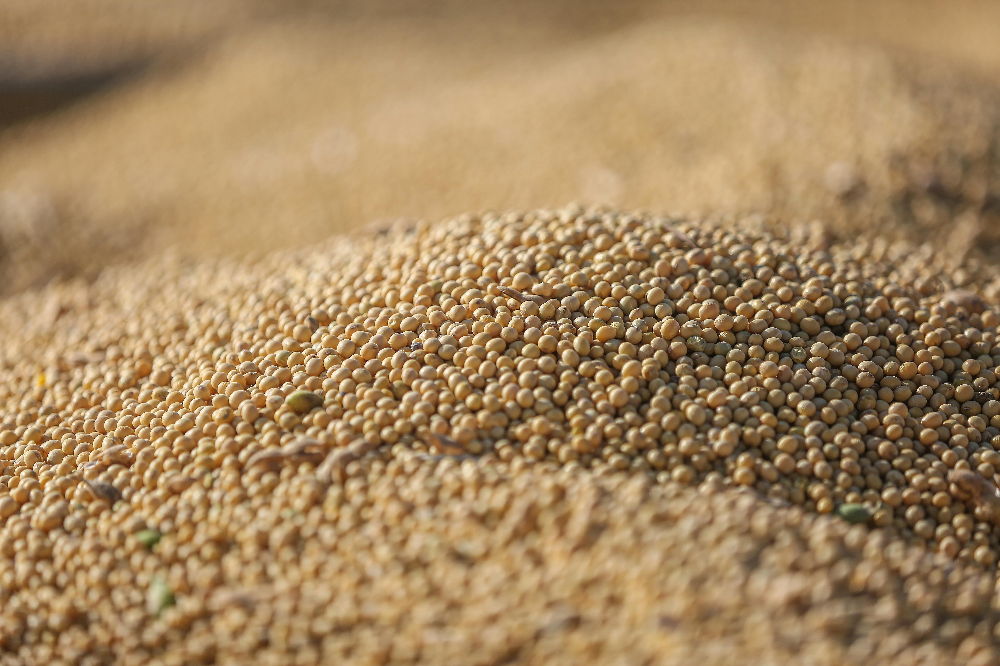
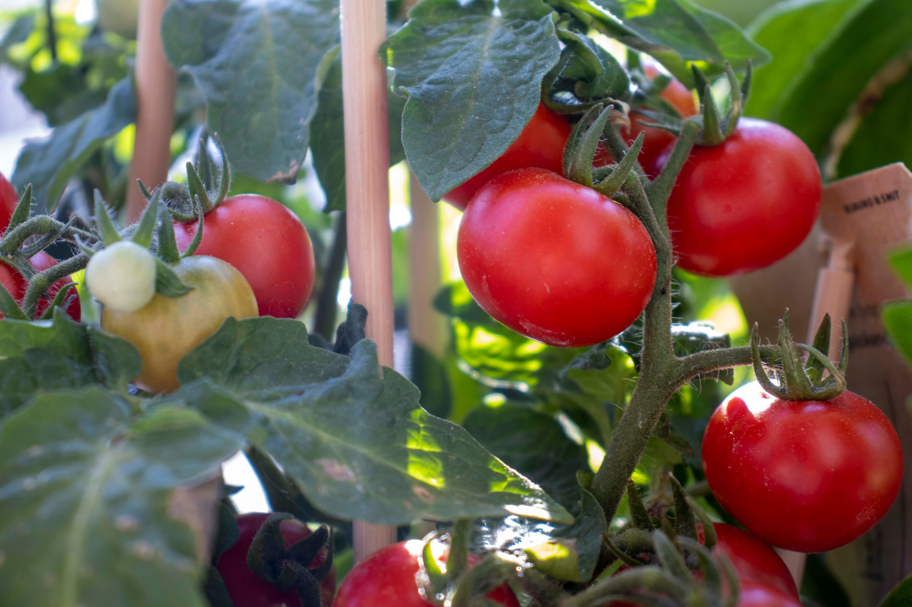

Agriculture pour Tous (APT) SARL
Fondée en 2018, APT SARL est une SARL congolaise engagée dans le développement rural durable, la sécurité alimentaire et la promotion de l'agriculture inclusive en République Démocratique du Congo.
Historique et Vision
Depuis sa création en 2018, APT SARL œuvre pour transformer le secteur agricole congolais. Sa vision est d'être un acteur majeur de cette transformation en améliorant la production agricole et de l'élevage, en augmentant la productivité et en promouvant une agriculture durable et inclusive.
Objectifs Stratégiques
- Améliorer la sécurité alimentaire et nutritionnelle en augmentant la production agricole et en diversifiant les cultures.
- Augmenter les revenus des agriculteurs en améliorant leur productivité et en facilitant l'accès à des marchés rémunérateurs.
- Promouvoir une agriculture durable respectueuse de l'environnement et des ressources naturelles.
- Renforcer les capacités des agriculteurs via la formation, l'accès aux nouvelles technologies et aux services de vulgarisation agricole.
- Contribuer au développement rural en créant des emplois et en améliorant les conditions de vie des populations rurales.
Zones d'Activités
APT SARL intervient dans toutes les 26 provinces de la République Démocratique du Congo, avec un siège social situé au N°2 de l’avenue Mbuka, Quartier N’djili Kilambu, commune de Mont Ngafula à Kinshasa.
Partenaires
- Secteur privé
- Communautés locales
- Institutions gouvernementales
- Organisations internationales
Ressources Humaines
Capacité Technique
APT SARL dispose d'une infrastructure solideet des partenariats avec des institutions de recherche, des organisations paysannes et le secteur privé.
Production Agricole








